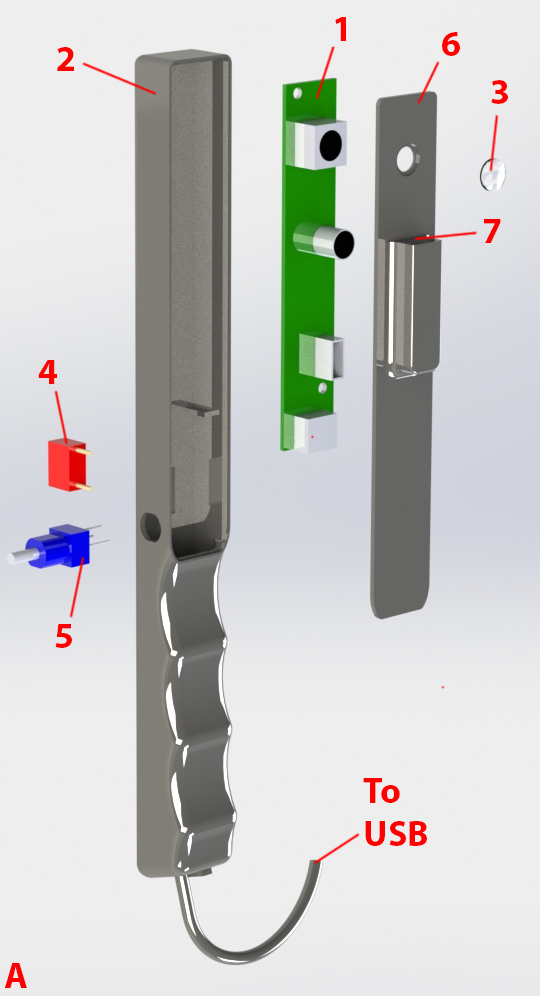
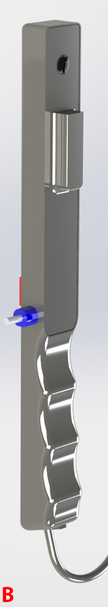
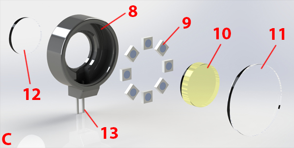
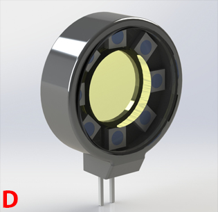
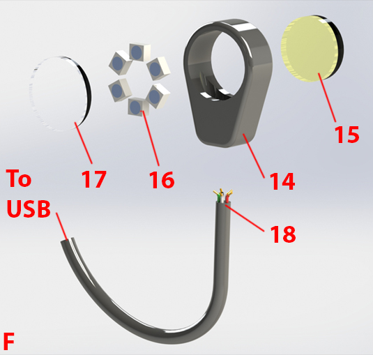
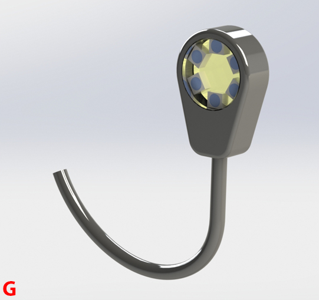

Red fluorescence device construction
General
- The items listed in the bills of materials represent one set of vendor sources; costs can be reduced with alternative sources.
- Access to a 3D printer and material is required.
- Access to a soldering iron and solder materials is required.
- Access to a hot glue gun to secure and insulate solder joints is recommended.
- Access to basic tools (wire strippers, knife, tweezers, etc. ) is recommended.
- Access to a power supply and multimeter is recommended.
- Basic knowledge of soldering and electronics is required.
Plaquefinder

| Number in diagram | Part | Quantity | Item cost (USD) | Quantity cost (USD) | Preferred vendor |
| 1 | Camera, USB, OEM board | 1 | $79 | $79 | e-con Systems |
| 3 | Lens, 6mm | 1 | $38 | $38 | Edmund Optics |
| 4 | Switch, on/off | 1 | $0.97 | $0.97 | Digi-Key |
| 5 | Potentiometer | 1 | $3.27 | $3.27 | Digi-Key |
| Cable, USB | 1 | $3.34 | $3.34 | Amazon |
| 7 | Cable, header-in, pack of 120 | 1 | $7.74 | $7.74 | Amazon |
| Epoxy, hard coat | 1 | $14.33 | $14.33 | Amazon |
| Quick-setting glue | 1 | $3.99 | $3.99 | Amazon |
| 2 | Chassis, 3D printed | 1 | | | |
| Chassis lid, 3D printed | 1 | | | |
| 6 | Chassis lid small cover, 3D printed | 1 | | | |
| Chassis end cap, 3D printed | 1 | | | |
| Misc.: Wires, solder, solder flux | | | | |
- Download and refer to the STL files.
- Gather components as per the above bill of materials.
- Embed the switch (4) into the chassis (2) and secure with quick-setting glue.
- Embed the potentiometer (5) into the chassis (2) and secure with quick-setting glue.
- The switch (4) and potentiometer (5) should be close enough such that their wire terminals can be bent and soldered together. Note usable pin positions on the potentiometer from the manufacturer's datasheet.
- Take a pair of female header-in cables and cut and strip their opposite ends.
- Solder the stripped end of one female header-in cable to the potentiometer's out terminal (5).
- Power for the LEDs is tapped from the camera USB cable. Carefully strip the USB cable to reveal the inner wires. The most common color codes for USB cables have their red and black wires supply power. Cut and strip the red and black wires; do not cut any other USB cables (most commonly white and green). Make sure that the point of insulation removal will ultimately be concealed by the chassis (2)
- Note that if you are using a different camera board, the current draw will differ from the one listed in the bill of materials. Make sure there is enough available current to power multiple LEDs.
- Insert the USB cable through the bottom end of the handle grip on the chassis (2).
- Rewind the stripped USB cable black wires while also adding the second header-in cable's stripped end into the node. Solder.
- Solder a miscellaneous wire to the unsoldered switch (4) terminal.
- Rewind the stripped USB cable red wires while also adding the wire from the previous step into the node. Solder.
- The female ends of the header-in cables become the access point (7). The terminal ends should be fit and be flush with the chassis lid (6). Secure with quick-setting glue.
- It is very important to note the positions of the positive (+) and negative (-) access point positions for future interchangeable head construction.
- Add the chassis lid small cover on top of the header-in access point to cover the wires.
- Apply a very small amount of quick-setting glue to the chassis lid (6) where the lens (3) is seated, and place the lens. The lens can be rotated slightly after placement to spin the glue around the lens edges.
- The recommended quick-setting glue in the bill of materials can be dissolved with acetone. If any glue accidentally is touched to the lens, carefully wipe it off with a soft, acetone-dampened cloth. Acetone can also dissolve many plastics used in 3D printing so take care when using it around the 3D printed components.
- Insert the camera board (1) into the chassis (2) and connect the USB cable.
- Now is a good time to make sure the lens (3) is aligned with the camera aperture. Carefully place the chassis lid (6) into its seat on the chassis (2), and connect the camera. Reevaluate placement of components if the camera and lens are not aligned.
- Now is also a good time to connect an interchangeable is connected to the access point (7) to ensure the LED circuit is in working order before the lid is fully sealed.
- Before placing the lid (6) permanently, it is a securing the inner components is highly recommended. Place dabs of quick-setting glue around the edge of the camera board (1) to fasten it to the chassis (2). Solder joints can be insulated and protected against bending stress with light applications of hot glue (hot-melt adhesive).
- Place quick-setting adhesive around the perimeter of where the chassis lid is seated, and secure.
- Place the chassis end cap onto the end of the chassis (2), with the USB cable exiting through the chassis end cap cutout. Secure with quick-setting glue.
- Mix the hard-coat epoxy as per manufacturer's recommendation and carefully brush it onto the chassis. Avoid fouling the switch, potentiometer, lens, or access point with the epoxy, but make sure all voids and seams between components become filled. Use sparingly and only coat a few surfaces at a time, allowing full cure before handling again. The objective is to make the surfaces smooth and safe for mouth contact, easy to clean, and to protect the inner circuitry and components from external liquids as much as possible.
- Also allow the epoxy to flow over the exiting USB cable area.
- Multiple coats will give an illustrious and smooth device exterior.
Plaquefinder Interchangeable Head

| Number in diagram | Part | Quantity | Item cost (USD) | Quantity cost (USD) | Preferred vendor |
| 11 | Window, 20mm | 1 | $22.5 | $22.5 | Edmund Optics |
| 12 | Window, 12.5mm | 1 | $8.7 | $8.7 | Edmund Optics |
| 10 | Filter, 530nm | 1 | $22.5 | $22.5 | Edmund Optics |
| 9 | LEDs, 405nm | 6 | $0.57 | $3.42 | Mouser |
| 13 | Terminals, header-in, pack of 600 | 1 | $4.09 | $4.09 | Amazon |
| Resistor | | | | |
| Epoxy, hard coat | 1 | $14.33 | $14.33 | Amazon |
| Quick-setting glue | 1 | $3.99 | $3.99 | Amazon |
| 8 | Chassis for head, 3D printed | 1 | | | |
| Misc.: Wires, solder, solder flux | | | | |
- Download and refer to the STL files.
- Gather components as per the above bill of materials.
- Take a piece of stiff but bendable wire and wind it around a small, cylindrical object. The 530nm filter (10) is the ideal size for this, but be careful as to not scratch the filter surface when doing so. The goal is to obtain a circle of wire.
- Bend a second circle of wire, but expand it slightly.
- Place one wire circle into the other. These wire circles serve as rails that the LED array (9) will sit on and connect to. Place the LEDs on top of the rail (but do not solder) to make sure the wire circles are of appropriate size. Adjust as necessary.
- Note that one rail will serve as the LED positive side (+), and one will serve as the LED negative (-) side.
- Refer to the manufacturer's instructions as to how the LEDs are polarized.
- Solder the terminal of one LED to one rail. Then, place the other circular wire concentric to the first. The unsoldered LED terminal pads should now be sitting on the second wire. Solder this.
- The construction of this LED array is challenging and requires patience and perseverance, but is achievable.
- Evenly place and solder the remaining LEDs one by one.
- Once the ring is assembled, set a power supply set to the recommended LED voltage. Connect the supply to the rails with correct polarization. Note which LEDs are not powered and re-solder those.
- Cut off a pair of header-in terminals.
- Cut and strip two small wires, and solder each wire to the short end of the header-in terminals.
- Solder the other end of each of the wires in the previous step to the ends of the LED array rails. The long ends of the header-in terminal strip (13) will become the electrical connection to the access point (7), so be sure the orientation of these terminals is correct in relation to the access point positive (+) and negative (-) sockets.
- Drop the LED/terminal assembly into the head chassis (8) and carefully push the terminals through the square hole in the chassis.
- It is recommended that the terminals are tested again to ensure all electrical connections are functional after pushing the terminals through the square hole.
- Secure the LED array and terminal assembly to the head chassis (8) with quick-setting glue.
- Use quick-setting glue to attach the smaller rear window (12) to the chassis. The window can be rotated slightly after placement to spin the glue around the window edges.
- The recommended quick-setting glue in the bill of materials can be dissolved with acetone. If any glue accidentally is touched to the windows, carefully wipe it off with a soft, acetone-dampened cloth. Acetone can also dissolve many plastics used in 3D printing so take care when using it around the 3D printed components.
- Place the filter (10) into its seat within the LED array and carefully secure with an extremely small amount of quick-setting glue. If there is too much glue, small seams will draw the glue to the interface between the filter (10) and small window (12) via capillary action.
- Use quick-setting glue to attach the larger front window (11) to the chassis. The window can be rotated slightly after placement to spin the glue around the window edges.
- It is recommended that all inner surfaces, especially the optical surfaces, have been cleaned before this step.
- Mix the hard-coat epoxy as per manufacturer's recommendation and carefully brush it onto the chassis. Avoid fouling the windows or header-in terminal (13) strip with the epoxy, but make sure all voids and seams between components become filled. Use sparingly and only coat a few surfaces at a time, allowing full cure before handling again. The objective is to make the surfaces smooth and safe for mouth contact, easy to clean, and to protect the inner circuitry and components from external liquids as much as possible.
- Multiple coats will give an illustrious and smooth device exterior.
Plaquefinder Smartphone Variant

| Number in diagram | Part | Quantity | Item cost (USD) | Quantity cost (USD) | Preferred vendor |
| 17 | Window, 12.5mm | 1 | $8.7 | $8.7 | Edmund Optics |
| 15 | Filter, 530nm | 1 | $22.5 | $22.5 | Edmund Optics |
| 16 | LEDs, 405nm | 6 | $0.57 | $3.42 | Mouser |
| 18 | Cable, USB OTG | 1 | $5.99 | $5.99 | Amazon |
| Resistor, | | | | |
| Epoxy, hard coat | 1 | $14.33 | | Amazon |
| Quick-setting glue | 1 | $3.99 | | Amazon |
| 14 | Chassis for smartphone attachment, 3D printed | 1 | | | |
| Misc.: Wires, solder, solder flux | | | | |
- Download and refer to the STL files.
- Gather components as per the above bill of materials.
- Take a piece of stiff but bendable wire and wind it around a small, cylindrical object. A thick pen is the ideal size for this; the goal is to obtain a circle of wire that fits into the main chassis (14) optics hole.
- Bend a second circle of wire smaller than the first.
- Place one wire circle into the other. These wire circles serve as rails that the LED array (16) will sit on and connect to. Place the LEDs on top of the rail (but do not solder) to make sure the wire circles are of appropriate size. Adjust as necessary.
- Note that one rail will serve as the LED positive side (+), and one will serve as the LED negative (-) side.
- Refer to the manufacturer's instructions as to how the LEDs are polarized.
- Solder the terminal of one LED to one rail. Then, place the other circular wire concentric to the first. The unsoldered LED terminal pads should now be sitting on the second wire. Solder this.
- The construction of this LED array is challenging and requires patience and perseverance, but is achievable.
- Evenly place and solder the remaining LEDs one by one.
- Once the ring is assembled, set a power supply set to the recommended LED voltage. Connect the supply to the rails with correct polarization. Note which LEDs are not powered and re-solder those.
- Power for the LEDs is tapped from an USB OTG cable. Carefully strip the USB cable to reveal the inner wires. Unlike regular USB cables, USB OTG cables have five wires. OTG cables are less color-standardized than regular USB cables, so it may be necessary to connect the cut cable to the smartphone and measure cable combinations until the 5V potential is found. Disconnect from smartphone when finished.
- Feed the stripped end (18) into the bottom hole of the main chassis (14).
- Cut and strip one of the USB OTG power cables shorter length; this will serve as the placement point for the power dissipating resistor.
- Cut one of the resistor wires as short as possible while still being able to achieve a solder joint. Connect this short side to the shorter USB OTG cable.
- Solder the USB OTG power wire and the unsoldered resistor wire each to a LED array rail, taking care to solder terminals correctly in relation to positive (+) and negative (-) current draw.
- Slowly guide the LED/terminal assembly into the main chassis (14) optics hole while carefully pulling the USB OTG cable.
- Sandwich the LED array between a filter (15) and window (17). Edges can be secured with quick-setting glue if desired.
- The recommended quick-setting glue in the bill of materials can be dissolved with acetone. If any glue accidentally is touched to the window or filter, carefully wipe it off with a soft, acetone-dampened cloth. Acetone can also dissolve many plastics used in 3D printing so take care when using it around the 3D printed components.
- Mix the hard-coat epoxy as per manufacturer's recommendation and carefully brush it onto the chassis. Avoid fouling the filter (15) or window (17) with the epoxy, but make sure all voids and seams between components become filled. Use sparingly and only coat a few surfaces at a time, allowing full cure before handling again. The objective is to make the surfaces smooth and safe for mouth contact, easy to clean, and to protect the inner circuitry and components from external liquids as much as possible.
- Also allow the epoxy to flow over the exiting USB OTG cable area.
- Multiple coats will give an illustrious and smooth device exterior.
Last updated 15 August 2016.